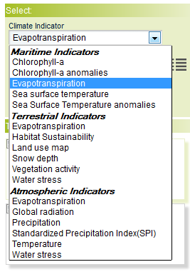
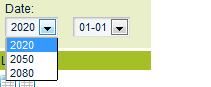
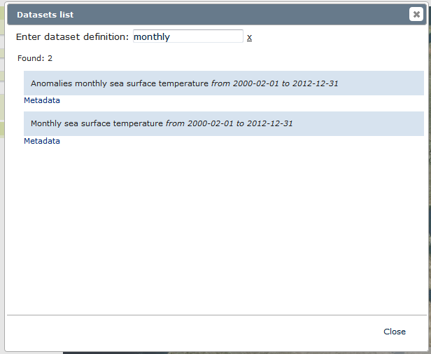

Select from the first list  a valid "Climate Indicator":
all, to load all datasets;
a specific "Climate Indicator", to load all layers that belong to the specific "Climate Indicator";
All layers will be loaded automatically to the "Dataset list": choose a valid one to show it into the map.
For some specific datasets a "Scenario list" will automatically loaded: select a dataset to show the map.
Example of layer:
All layers could be separated into:
Observations, all layers refer to the state of being observed;
Projections, all layers refer to the state of being projected;
Change year and period to change the date of the uploaded dataset:

This dataset will be added into the "Table of Contents" with a green shadow as showed below:
Click on the following image to open a pop-up with the complete list of all available datasets:
Select a specific dataset or use the corresponding box to search for a specific criteria: a list that matches the search criteria will be shown.



 to open a pop-up with the complete list of all available datasets:
to open a pop-up with the complete list of all available datasets: